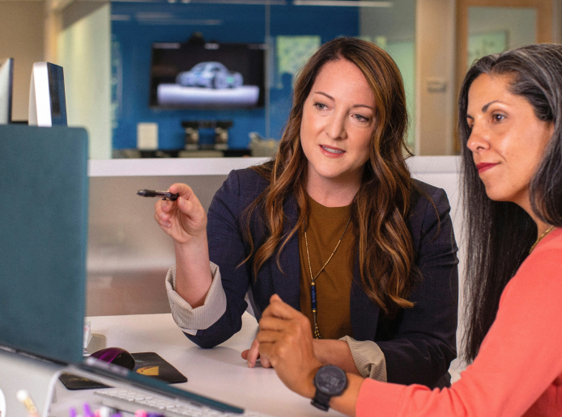

Perícia Contábil Judicial e Extrajudicial
Elaboração de laudos periciais, pareceres técnicos, formulação de quesitos e acompanhamento processual em demandas judiciais, arbitrais e mediações.
Atuação em perícias contábeis judiciais e extrajudiciais combinada à consultoria especializada para empresas, sócios e profissionais do Direito que necessitam de clareza patrimonial, rigor nos cálculos e prevenção de litígios.
Exames periciais, avaliações patrimoniais e assistência técnica em diferentes esferas
Elaboração de laudos periciais, pareceres técnicos, formulação de quesitos e acompanhamento processual em demandas judiciais, arbitrais e mediações.
Verificação de balanços patrimoniais, demonstrações de resultado e escriturações para avaliar consistência contábil, fidedignidade dos saldos e eventuais distorções.
Avaliação econômico-financeira de empresas para operações de compra, venda, fusão, incorporação ou reestruturação estratégica de negócios.
Levantamento patrimonial e mensuração do valor de quotas sociais em processos de retirada, exclusão ou falecimento de sócios e dissolução parcial ou total de sociedades.
Revisão de contratos bancários e empresariais, apuração de encargos, taxas de juros, sistemas de amortização, recomposição de saldo devedor e lucros cessantes.
Conciliação de movimentações financeiras, rastreamento de lançamentos, conferência de tarifas e identificação de divergências em contas correntes ou aplicações.
Cálculos trabalhistas na fase de conhecimento ou liquidação de sentença, apuração de verbas rescisórias, reflexos, atualizações monetárias e pareceres de impugnação.
Exame de prestações de contas, conferência de receitas, despesas ordinárias e extraordinárias, fundos de reserva e conformidade documental da administração.
Suporte especializado no levantamento, conferência e avaliação de bens, direitos e obrigações em processos de inventário, partilha e sucessão patrimonial.
Com vivência prática em perícias judiciais e extrajudiciais, nossa equipe atua na detecção de inconsistências, fragilidades e pontos vulneráveis ligados à gestão empresarial, às relações societárias e às operações financeiras.
Além do trabalho pericial em disputas já instaladas, prestamos consultoria especializada para organizações e clientes que buscam planejar seus próximos passos, mitigar contingências e evitar conflitos patrimoniais.
Identificação preventiva de distorções em registros contábeis, contratos e operações financeiras antes que gerem passivos ou litígios.
Apoio técnico na estruturação de acordos, apurações patrimoniais e transições societárias, prevenindo impasses entre sócios e herdeiros.
Tradução de demonstrativos e indicadores complexos em informações objetivas para fundamentar negociações, investimentos e defesas jurídicas.
Atendemos escritórios de advocacia, departamentos jurídicos e empresas em todo o território nacional, fornecendo laudos periciais, pareceres e assistência técnica com agilidade e fundamentação científica.
